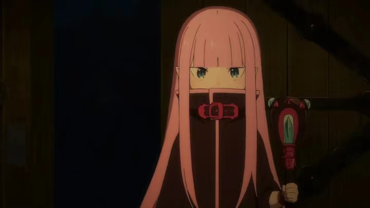
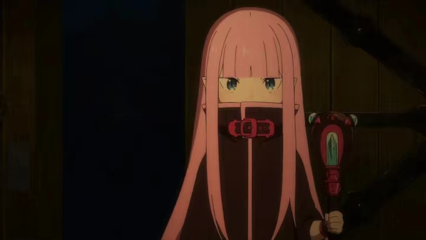

Basic Info
My name is Lucy, and I am now a first year graduate student at UMSI.
My research interest is in scattering neural networks for human motion prediction.
My Interest
I started to play badminton since I was 12, and I am really good at it now.
In my spare time I enjoy watching Japanese Animes. My favorite ones are Steins:gate and Drrr!!.
❤️Favorite characters

 
